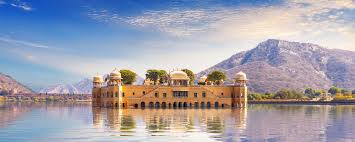
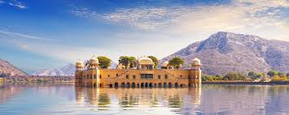
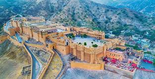
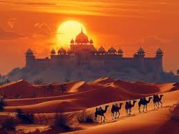
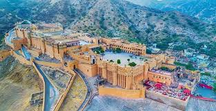
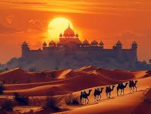

Amber Fort
Hilltop palace complex with courtyards, mirror halls and lake views.
Jaipur blends Rajput architecture, royal palaces, hillside forts and colourful bazaars. The Old City is painted in shades of pink, giving Jaipur its signature look.
Amber Fort, Hawa Mahal and City Palace are major highlights, and the city works well as part of the Golden Triangle with Delhi and Agra.
Hilltop palace complex with courtyards, mirror halls and lake views.
Iconic honeycomb façade built for royal women to watch street life.
Royal residence with museums, courtyards and ornate gates.
Massive fort with ramparts, viewpoints and the world’s largest cannon.
Walk through courtyards, mirror hall and terraces overlooking Maota Lake.
Iconic pink façade and lively markets around Badi Chaupar.
Detailed royal art, weapons and beautifully decorated courtyards.
Classic Golden Triangle stop.
Quick visit
Complete trip
3–4 days
Central and well-connected with cafes and shops.
Good for first-timers.
Quiet residential area with heritage hotels.
Great mid-range value.
Scenic sunrise views and stays near major forts.
Ideal for photographers.

 


 




Crowds, timing and local habits.